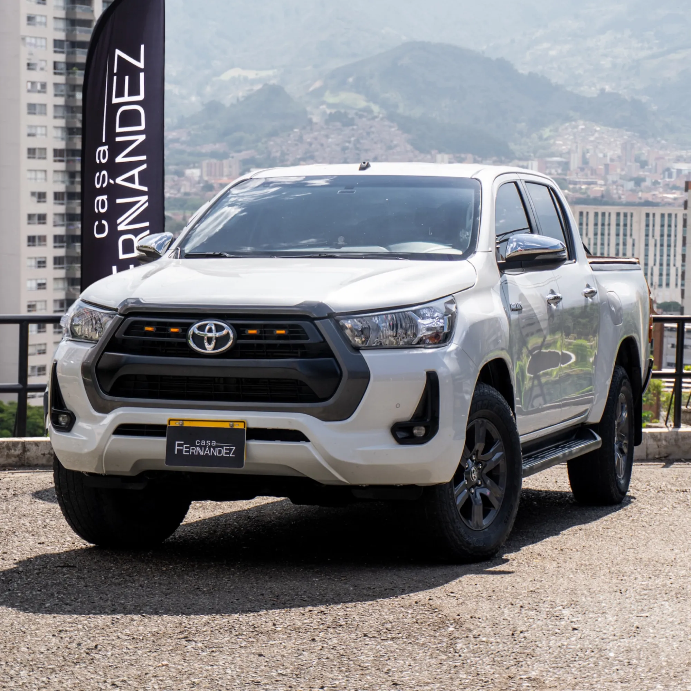
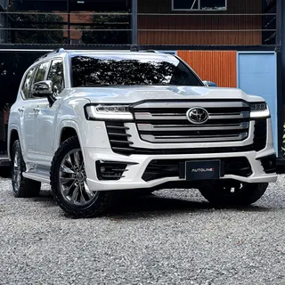

Las mejores camionetas Toyota
Toyota es una de las marcas más reconocidas en el mundo automotriz, ofreciendo camionetas confiables y de gran desempeño.
Toyota Hilux

La Toyota Hilux es famosa por su resistencia y capacidad para enfrentar cualquier terreno.
Toyota Land Cruiser

El Toyota Land Cruiser es sinónimo de lujo y potencia en el mundo de las camionetas todoterreno.